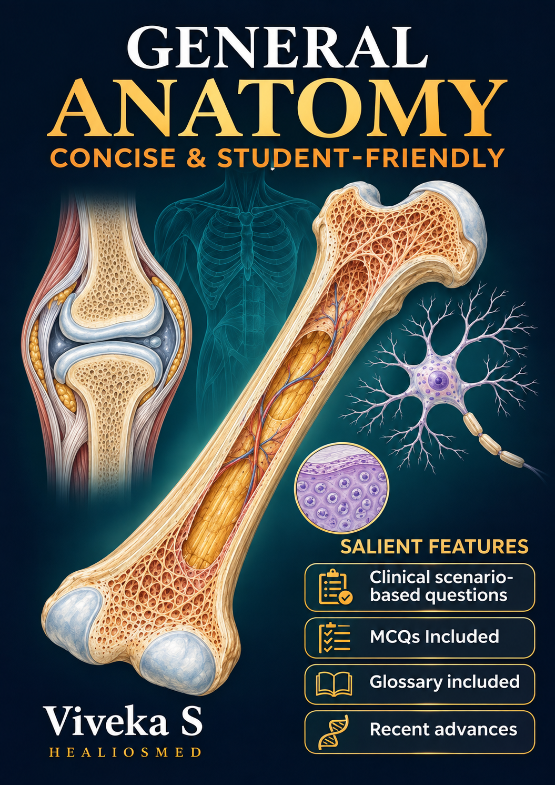

About this book

General Anatomy
Viveka S
Publication history
First edition: 2020
Kindle edition: October 2026
Published by: Healiosmed Education Private Ltd
Copyright
© 2026 Viveka S
Third-party illustrations and other reproduced material are credited in their respective captions or in the image credits.
Companion learning resources
Educational purpose
This book is intended for anatomy education. Clinical examples illustrate anatomical principles and do not replace professional clinical assessment or guidance.
Corrections and feedback
Suggestions and corrections may be sent to healiosmed@gmail.com
Introduction
General anatomy provides the foundation for understanding the structure of the human body. Its terminology and principles recur throughout regional anatomy, histology, embryology, and clinical practice. A clear understanding of these fundamentals makes subsequent learning more manageable.
For a student entering medical school directly from higher secondary education, the first encounter with anatomy can be overwhelming. Comprehensive textbooks offer extensive detail, but the volume of unfamiliar terms and concepts can make it difficult to identify where to begin and what to understand first.
This book has been developed to make that beginning easier. It presents essential concepts in concise language, with emphasis on their meaning, relationships, and relevance. The aim is to establish a sound foundation that students can build upon as their studies progress.
The chapters introduce the basic principles of bones, cartilage, joints, fascia, skin, muscles, blood vessels, nerves, and lymphatics. Illustrations support the explanations, while clinical connections show why particular anatomical features matter. Questions encourage readers to explain concepts in their own words and apply them to unfamiliar situations.
Students are encouraged to read actively. After studying a topic, pause to recall its main ideas, identify the structures in the accompanying illustrations, and explain how structure relates to function. Returning to difficult concepts through questions and diagrams can help consolidate understanding.
Interactive learning resources: Companion activities covering the same topics are available at anatomy.healiosmed.com.
These include drag-and-drop exercises, fill-in-the-blank questions, multiple-choice questions, image hotspots, and interactive videos. They provide opportunities to identify structures, test recall, and apply the concepts introduced in the book.
For each topic, begin with the explanation and illustrations in the chapter, then use the corresponding online activities to assess your understanding. Revisit the relevant section when an answer reveals a gap in your knowledge.
The purpose is to help you approach anatomy with a clear starting point and the confidence to ask, explain, and connect.
Viveka S
MBBS, MD (Anatomy), DNB (Anatomy), Advance Course in Medical Education (2017)
Professor of Anatomy
Content Creator at Healiosmed.com